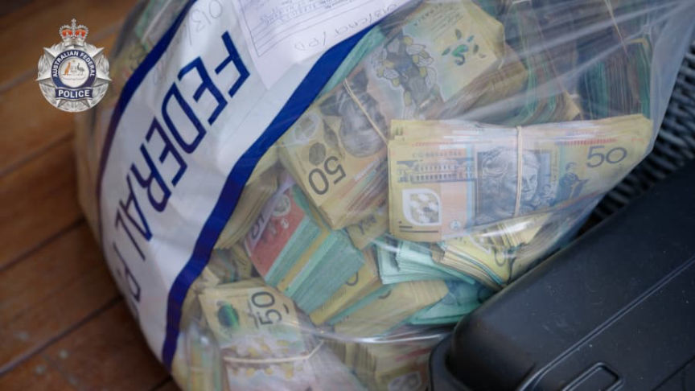
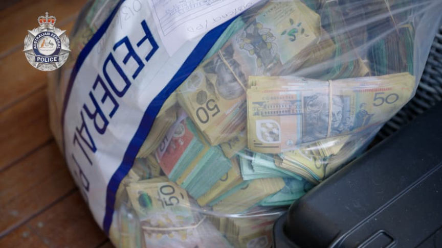

Australian Feds Launch Unit for Monitoring Crypto Transactions
~1 min read | Published on 2022-09-05, tagged Chainalysis, Cryptocurrency using 209 words.
The Australian Federal Police launched a new unit focused on monitoring cryptocurrency transactions.
According to the Australian Financial Review, the Australian Federal Police (AFP) has created a new unit dedicated to monitoring cryptocurrency transactions.
AFP National Manager Criminal Assets Confiscation Stefan Jerga, who heads the new unit according to CoinDesk, said tracing cryptocurrency transactions was a “really, really important” part of policing.
“It’s targeting assets, but it’s also providing that valuable, investigative tracing capability and lens for all of our commands across all of our businesses, whether they’re national security-related, child protection, cyber – or the ability to trace cryptocurrency transactions across the relevant blockchains is really, really important.”
In a September 5 press release, the AFP-led Criminal Assets Confiscation Taskforce (CACT) revealed the value of property seized by law enforcement since 2020. Cryptocurrency seizures account for a tiny portion of the total value:[list]*$380 million in residential and commercial properties;*$200 million in cash and bank accounts, and*$35 million in cars, boats, aircraft, cryptocurrency, artwork, and other luxury items.[/list]

In April 2022, the Australian Transaction Reports and Analysis Centre (AUSTRAC) released a guide on “preventing the criminal abuse of digital currencies.”
There is not any information about the new unit apparently. The Financial Review article is behind a paywall.
According to the Australian Financial Review, the Australian Federal Police (AFP) has created a new unit dedicated to monitoring cryptocurrency transactions.
AFP National Manager Criminal Assets Confiscation Stefan Jerga, who heads the new unit according to CoinDesk, said tracing cryptocurrency transactions was a “really, really important” part of policing.
“It’s targeting assets, but it’s also providing that valuable, investigative tracing capability and lens for all of our commands across all of our businesses, whether they’re national security-related, child protection, cyber – or the ability to trace cryptocurrency transactions across the relevant blockchains is really, really important.”
In a September 5 press release, the AFP-led Criminal Assets Confiscation Taskforce (CACT) revealed the value of property seized by law enforcement since 2020. Cryptocurrency seizures account for a tiny portion of the total value:[list]*$380 million in residential and commercial properties;*$200 million in cash and bank accounts, and*$35 million in cars, boats, aircraft, cryptocurrency, artwork, and other luxury items.[/list]

Cash seized during an AFP investigation | CACT
In April 2022, the Australian Transaction Reports and Analysis Centre (AUSTRAC) released a guide on “preventing the criminal abuse of digital currencies.”
There is not any information about the new unit apparently. The Financial Review article is behind a paywall.